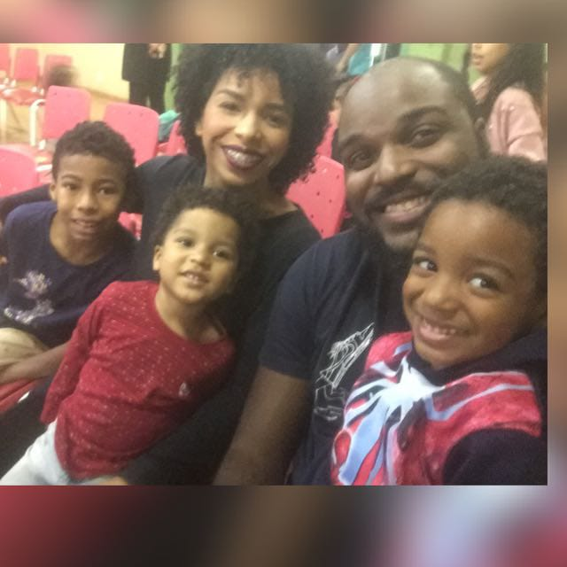

Familia Fernandes
A familia Fernandes é constituída de 5 pessoas,
sendo 2 adultos e 3 crianças, cujo os nomes são:
Caroline, a mãe
Davi, o Pai,
Teodoro, o filho mais velho,
Levi, o filho do meio
Benjamim, o mais novo.

conheça aqui neste lik a historia do pai
clique aqui